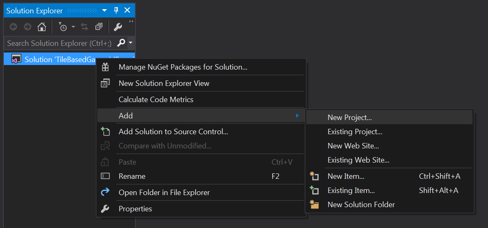
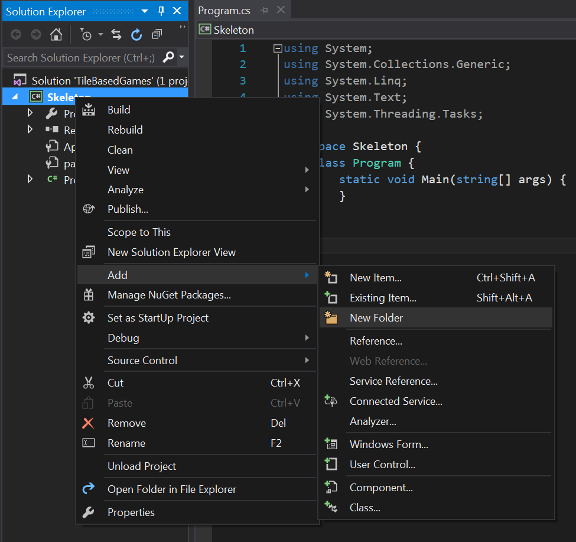

Starting Out
Setting up a solution
Make a new visual studio solution, i called mine "TileBasedGames"

Notice that this created a new solution called TileBasedGames as well as a new project called TileBasedGames. Go ahead and delete the project. Right click the project and select Remove. Click "OK" on the confirm dialog.

If you look at the "TileBasedGames" folder there are two things in there, a solution named "TileBasedGames" and a folder named "TileBasedGames". The folder contains the project we just deleted. Go ahead and delete that folder.

Before we do anything else, add a .gitignore file. Use the Visual Studio template.
Lets also add an Assets folder next to the solution. This is where we are going to keep all shared game assets. All in all your folder structre should look like this:

Setting up a project
Let's go trough setting up a project together. While you won't use this specific project, all subsequent tutorials will have the same setup. Ideally you want to have one solution with many projects inside it.
Let's add a new project called Skeleton. Right click on your solution and add a new project.

I'm going to go ahead and call mine Skeleton

Link in System.Drawing. Right click on references and select "Add Reference"

Type System.Drawing in the search box, check the appropriate package

Next we're going to link in two NuGet packages, OpenTK and (https://naudio.codeplex.com/). Right click on the project and select Manage NuGet Packages

In the window that pops up, type TopenTK in the search bar, select the appropriate package and hit install.

Repeat for NAudio

We set up an Assets folder when we created the soltuion. Let's set the projects working directory so we can actually use the Assets folder. Right click on the solution, select Properties

In the debug tab, browse for a new working directory

Select the TileBasedGames root directory. THIS IS NOT THE Assets DIRECTORY, RATHER THE Assets DIRECTORY'S PARENT.

We want to select the parent of the Assets directory. This way when you are ready to distribute your game, you just have to copy the Assets directory next to your exe file. Your properties should look like this:

That is our basic project setup minus any code. The Assets Directory Is Shared. All of the projects we build in this tutorial will use the same Assets directory!
Adding code
We're going to add the OpenTK Framework Managers to this project. I'll link to the code on the main repo, but i'll also include it in the tutorial, in case the repo goes down.
Right click on the project, select Add, then New Folder

Go ahead and name this folder Managers. Right click on the new Managers folder, select add, then new item

Call the new item GraphicsManager

Replace the contents of the new GraphicsManager.cs file with this. Make sure to use the latest code from the repo, as some of the code might have changed since you last saw it.
Repeat the above steps to add the TextureManager, InputManager and SoundManager. In case the main repo ever goes down i've included the source for all the managers in the tutorial, check the sub-sections of this section.
Let's add a new Game class, this is the class that we will be writing most of the example code in. Ideally you shouldn't have to touch any other classes. Add the game file to the solution (it's a top level file, next to Program.cs, not in the managers directory), and fill it with the following code:
using System;
using GameFramework;
using System.Collections.Generic;
namespace Skeleton {
class Game {
// Singleton
private static Game instance = null;
public static Game Instance {
get {
if (instance == null) {
instance = new Game();
}
return instance;
}
}
protected Game() {
}
public void Initialize() {
}
public void Update(float dt) {
}
public void Render() {
}
public void Shutdown() {
}
}
}
The class is a singleton, each function in here should be relativley straight forward. The last thing we have to do is fill in the main Program. Change the contents of Program.cs to
using System;
using OpenTK;
using OpenTK.Input;
using System.Drawing;
using GameFramework;
using System.Collections.Generic;
namespace Skeleton {
class Program {
public static OpenTK.GameWindow Window = null;
public static void Initialize(object sender, EventArgs e) {
GraphicsManager.Instance.Initialize(Window);
TextureManager.Instance.Initialize(Window);
InputManager.Instance.Initialize(Window);
SoundManager.Instance.Initialize(Window);
Game.Instance.Initialize();
}
public static void Update(object sender, FrameEventArgs e) {
float deltaTime = (float)e.Time;
InputManager.Instance.Update();
Game.Instance.Update(deltaTime);
}
public static void Render(object sender, FrameEventArgs e) {
GraphicsManager.Instance.ClearScreen(Color.CadetBlue);
Game.Instance.Render();
// Show framerate
int FPS = System.Convert.ToInt32(1.0 / e.Time);
GraphicsManager.Instance.DrawString("FPS: " + FPS, new PointF(5, 5), Color.Black);
GraphicsManager.Instance.DrawString("FPS: " + FPS, new PointF(4, 4), Color.White);
GraphicsManager.Instance.SwapBuffers();
}
public static void Shutdown(object sender, EventArgs e) {
Game.Instance.Shutdown();
SoundManager.Instance.Shutdown();
InputManager.Instance.Shutdown();
TextureManager.Instance.Shutdown();
GraphicsManager.Instance.Shutdown();
}
[STAThread]
public static void Main() {
// Create static (global) window instance
Window = new OpenTK.GameWindow();
// Hook up the initialize callback
Window.Load += new EventHandler<EventArgs>(Initialize);
// Hook up the update callback
Window.UpdateFrame += new EventHandler<FrameEventArgs>(Update);
// Hook up the render callback
Window.RenderFrame += new EventHandler<FrameEventArgs>(Render);
// Hook up the shutdown callback
Window.Unload += new EventHandler<EventArgs>(Shutdown);
// Set window title and size
Window.Title = "Game Name";
Window.ClientSize = new Size(800, 600);
// Run the game at 60 frames per second. This method will NOT return
// until the window is closed.
Window.Run(60.0f);
// If we made it down here the window was closed. Call the windows
// Dispose method to free any resources that the window might hold
Window.Dispose();
#if DEBUG
Console.WriteLine("\nFinished executing, press any key to exit...");
Console.ReadKey();
#endif
}
}
}
Program.cs just takes care of initializing and cleaning up our various managers. All of your actual game code will go into the Game class.
You should be good to go. Compile and run the game to make sure that the standard window pops up. You will likeley have to do the above steps for EVERY project you make. Don't Link to the managers, include them in each project.
Checkin
Go ahead and commit what you have to github. Before moving onto the next section check in with me. I want to look over your code, make sure that the project is properly organized before moving on.